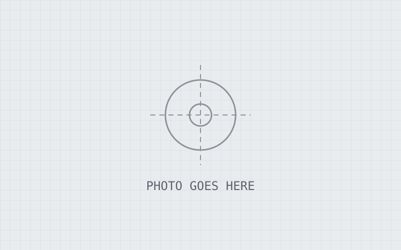
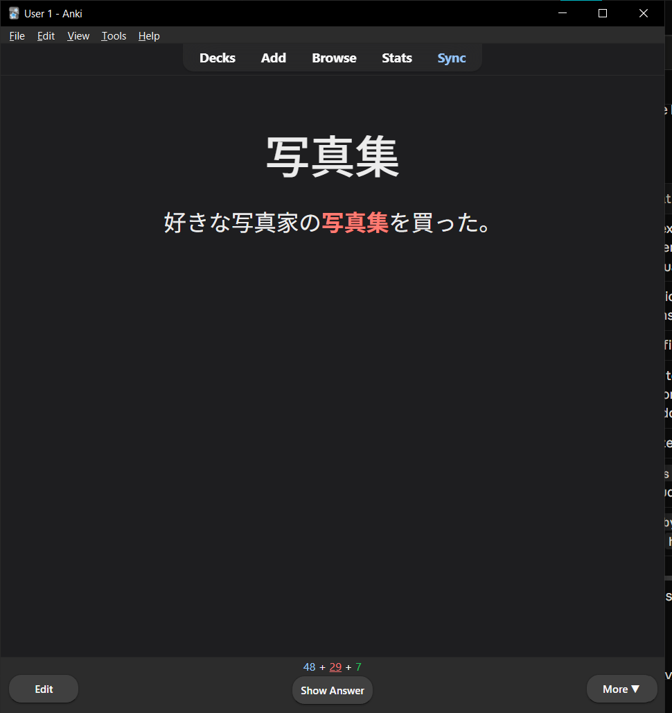

Mechanical Engineering · Japanese · CNC
I design parts and then make them.
Mechanical engineering and Japanese senior, working as a CNC programmer and designer. I take parts from CAD and FEA through to finished, machined hardware.
01Projects
Click a project for photos, video, and CAD you can rotate in the browser.

1UZ Project
Engine swap work: an AR5 manual transmission adapter, an electric fan conversion, and an Arduino CAN digital dash.
CNC Design & Production
Parts I've designed, programmed, and machined, from one-off prototypes to production runs.

Joshi's Jisho ジョシの辞書
A Japanese–English dictionary of engineering terms pulled from machining patents, with search and Anki export.
02Experience
-
20XX – present
CNC Programmer & Designer · Company name
Add 2–3 bullet points: machines and controls, CAM software, what you own (programming, fixtures, first-article inspection), and one number (parts/month, cycle time saved, scrap reduced).
-
20XX – 20XX
B.S. Mechanical Engineering + Japanese · University name
Expected graduation date, relevant coursework, and any design team or study abroad.